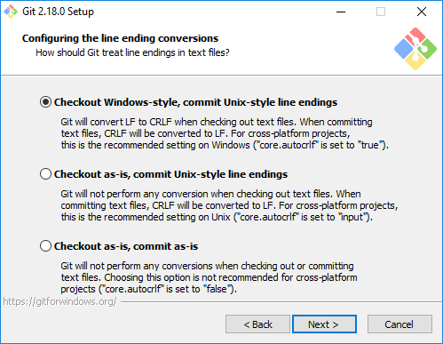
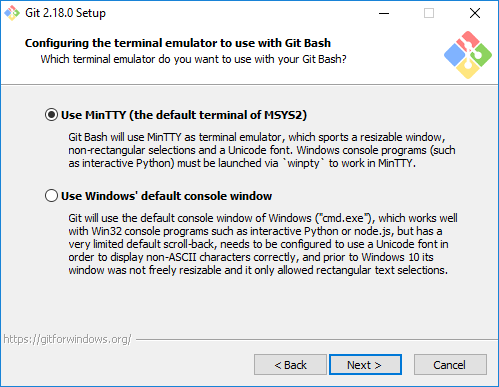
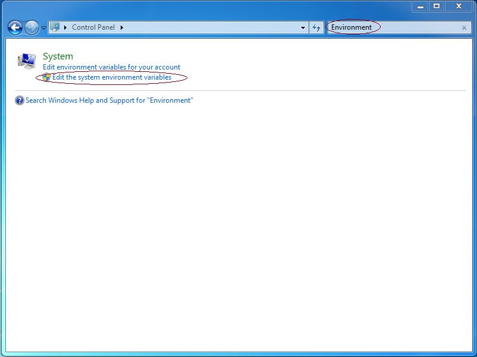

Navigation
Depending on your operating system, there are a bunch of things we need to do to setup your computer up for this course. Follow the instructions linked above, which is dependent on the operating system of your computer.
A. Windows Setup
Install Java
You'll need to install the Java 12 JDK in order to compile your code for this class.
- First, head over to the Oracle website.
In the Java SE Development Kit Section of the page, agree to the license. Then proceed to download the binary file for Windows.
- Run the installation file and follow the prompts to install Java onto your computer. It's okay to follow all the default options.
Install Git and Git Bash
- Head over here and grab git for Windows.
Run the
.exefile that is downloaded. When you run the installer, you’ll be faced with many options. Unlike everything else, we do not recommend the default options. Instead, you should choose the options listed below.
Checking
Windows Explorer integrationwill let you do git things upon right-clicking a file or folder, more specifically, run Git Bash and the Git GUI respectively. This is not required, but might be handy.Next we'll select a default Git Bash. Unless you've used vim before, we strongly recommend using nano instead.
Git Bash is a bash shell with built-in git support and lets you use some MinGW/Linux tools. If you already know what bash is and have a preferred terminal, you're welcome to use that instead. Using Git from Git Bash is the recommended option.
Windows and Unix based systems use different things to denote line endings in files. Use the recommended option (the first one) to avoid seemingly mysterious bugs down the road.

We recommend that you use the default OpenSSL library.

This option lets you pick between two different "terminal emulators." This will deeply affect the aesthetics of your working environment. Our official directions assume you choose MinTTY, so if you pick the other option, you're on your own.

Last but not least, enable all of these extra options.

Install python3
- Install python3. We'll be using it to compile more complicated projects later on.
Set up Environment Variables
Now it's time to update your environment variables to include Java and Python!
The fine-grain details of this will depend on your OS, but the first step is to open up your system (not user) environment variables...
Windows 8/8.1/10: Press Windows and type
Environment Variables. Then, select "Edit the system environment variables". The first image below is the search on Windows 8.1, while the second image is the search on Windows 10.
Windows 7 and earlier: Search the control panel for the same thing.

Navigate to the "Advanced" tab, and click "Environment Variables...".

Under "System variables" (this section will be unavailable if you are editing account or user variables), click "New..."
Define the following variables and use the values specified below as the value of the variable. If the variable already exists, select the variable and click "Edit...", then add the value specified below to the front of the value, followed by a semicolon.
JAVA_HOME: Set this to the location which you installed Java JDK (for example,
C:\Program Files\Java\jdk-12.0.2).- PYTHON_HOME: Set this to the location where you installed Python,
for instance,
C:\Python35orC:\Program Files\Python35. - PATH: (This most likely already exists!) On Windows 10, click
“New”, and enter exactly
%JAVA_HOME%\binin the new box. Then, click "New" again, and enter exactly%PYTHON_HOME%. On older versions, add exactly%JAVA_HOME%\bin;%PYTHON_HOME%;to the beginning of the variable. The%symbols demarcate a path substitution in Windows. There are NO spaces; putting spaces in Windows path definitions can sneakily RUIN your day!
- Save your changes by hitting
OKto close out of "Environment Variables" and "System Properties". At this point, yourjavacshould be working. Open Git Bash and type injavac -versionand ensure that it respondsjava version "12..... If it claimsjavacisn't a recognized command, something is wrong with your path setup. (You mustOKout of those configuration windows first for your changes to take effect.)
At this point, everything should be working now. Continue on to the Test Run section and return here if something goes wrong.
B. macOS Setup
Install Homebrew, a very easy to use package manager. To install, go to your Terminal and enter the following:
ruby -e "$(curl -fsSL https://raw.githubusercontent.com/Homebrew/install/master/install)"During the process, you may be prompted to enter a password. When you enter your password, nothing will display on the terminal, but the computer is actually recording your password. This is a security measure. Just type your password and hit enter.
Then, check to make sure brew is working properly on your system by typing:
brew doctorYou may encounter warnings like this, but you should be fine. Proceed to the next step.
- If you encounter a warning asking you to download Command Line Tools, you will need to do this. Please follow the StackOverflow post here.
Install java, python3, and git. You can do this by typing:
brew cask install java brew install git brew install python3You can test your version of java by running:
java -versionIf the version does not begin with a "12", try uninstalling and then reinstalling with:
brew cask reinstall java
At this point, everything should be working now. Continue on to the Test Run section and return here if something goes wrong.
C. Unix and Linux Setup
If you are using a Linux/Unix distro, use your package manager (apt-get, yum, etc) to install the Java 12 JDK, python3, and git.
First, check to see if Java 12 is already installed by typing:
sudo apt-get install oracle-java12-installer python3 gitAgain, be sure to use your distro-specific package manager. If you are using yum for example, substitute the apt-get command with yum.
Finally, if you have an older version of java, you can check out these instructions for how to manage multiple Java installations.
Alternatively, follow these beautiful instructions for Ubuntu, Linux Mint, or these beautiful instructions for CentOS, Redhat, Fedora. If you're a different Debian system, you can follow the first link. If you're running a Linux distro that hasn't been mentioned, you probably already know how to install Java 12 and much more!
At this point, everything should be working. Continue on to the Test Run section and return here if something goes wrong.
D. Test Run
Let's try running a Java program to try out your new setup! Just this once, we will tell you to do things without any explanation as to how or why they work. This dark magic will be explained in lab 1 and lecture 1, but for now, is just here for you to check your setup in a quick n' dirty manner.
Open up your terminal (for Windows, use Git Bash or a related bash terminal) and run this magic:
mkdir -p ~/temp && cd ~/temp(This forcibly creates a folder "temp", and navigates there.)
Then, do a platform specific action to open your file explorer in this directory:
- Mac:
open . - Windows:
explorer . - Ubuntu:
xdg-open . - Linux Mint:
xdg-open .ormate .
If this command does not work, you can always manually open the file explorer like you normally would.
- Mac:
In this newly opened directory, create a file called
HelloWorld.javawith these contents (you can do this using an ordinary text editor):public class HelloWorld { public static void main(String[] args) { System.out.println("Hello world!"); } }
Okay. Now you're ready to start the real test. Here's a screenshot of your dream goal, a perfect, no-error run-through that indicates your java setup is just fine:

- In your terminal, enter
ls(list the files/folders in this directory). You should seeHelloWorld.javalisted. - Run
javac HelloWorld.java. If this produces any output, then something is wrong with your setup. If there is no output, when youls, you should see bothHelloWorld.javaand a freshly createdHelloWorld.class(thejavaccommand created this file). - Run
java HelloWorld. It should print out "Hello world!" for you. If it didn't, something is wrong with your setup! You may now delete the "temp" folder and its contents. Either delete the folder manually or if you're feeling brave, you may use the command:
cd .. && rm -rf ~/temp(This navigates you into the parent directory then removes the folder ~/temp and its contents.)
- You're done! You may now proceed to Lab 1.